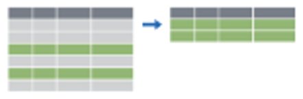
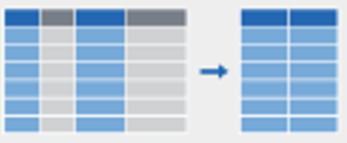
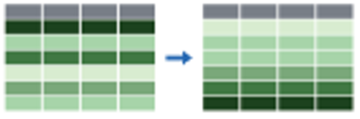
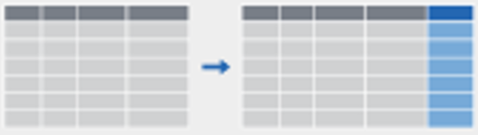
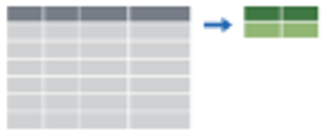

Sesión 4
Curso: Fundamentos R para Ciencia de Datos en Salud
Percy Soto-Becerra, M.D., M.Sc(c)
InkaStats Academy | Latin Data Science Solutions S.A.C.

Datos ‘tidy’
Agenda
Datos ‘tidy’
El Operador Pipe
Principios del manejo de datos con {dplyr}
Otros verbos útiles para manejo de datos
Uso de helpers
Datos ‘tidy’
Características de los datos ordenados o ‘tidy’
- Cada
variableforma uncolumna. - Cada
observaciónforma unafila. - Cada
tipo de unidad observacionalforma unatabla.
Características de los datos desordenados o ‘untidy’
!@#$%^&*()
Gramática de manejo de datos
Al igual que {ggplot}, el paquete {dplyr}, también de {tidyverse}, ofrece toda una gramática llena de funciones que actúan como verbos para manipular data.frames.
select: extrae columnas usando nombresarrange: reordena filasslice: extrae filas usando índicesfilter: extrae filas que coincidan con criterios lógicosdistinct: filtra por filas únicasmutate: agrega nuevas variablessummarise: reduce variables a valoresgroup_by: para operacionesa agrupadas- … (mucho más)
Reglas de las funciones de {dplyr}
El primer argumento siempre es el
data frame.Los argumentos subsecuentes dicen qué hacer con el
data frame.Siempre retorna un
data frame.No altera el
data frameoriginal.
Ejemplo de función {dplyr} en acción: seleccionar columna
Ver solamente country (países):
Reglas de las funciones de {dplyr} en acción
Reglas de las funciones de {dplyr} en acción
Reglas de las funciones de {dplyr} en acción
Reglas de las funciones de {dplyr} en acción
Inicia con la función (un verbo): select()
Primer argumento: data frame con el que trabajaremos, gapminder
Segundo argumento: variable que queremos seleccionar, country
Resultado: data frame con 1704 filas y 1 columna
Entra data frame / tibble, sale data frame / tiblble
Las funciones de dplyr siempre esperan un data frame y siempre generan un data frame.
- Entra:
- Sale:
El Operador Pipe
Agenda
Datos ‘tidy’
El Operador Pipe
Principios del manejo de datos con {dplyr}
Otros verbos útiles para manejo de datos
Uso de helpers
¿Qué es un pipe?
En programación, un
pipees una técnica para transmitir información de un proceso a otro.
En R, hay dos operadores pipe:
pipe de tidyverse:
%>%pipe nativo (de R base):
|>
En este curso, usaremos el pipe de tidyverse:
%>%El operador pipe de tidyverse es del paquete {magrittr}, que no necesita ser cargado si es que se carga {tidyverse}.


%>% en acción
Este operador conecta secuencia de acciones en forma de código:
yo
despierto a las 8 horas
salgo de cama por el lado derecho
visto pantalones y polo
salgo de casa con carro sin bicicleta
Atajo de teclado del operador pipe:
Ctrl + Shift + M
Ctrl + ⇧ + M
Un ejemplo de uso de %>%
Sin %>%:
- El código es redundante: repites tres veces
datos_fase1.
# A tibble: 6 × 14
id time treat age race married married2 procedence weight height e2
<dbl> <fct> <fct> <dbl> <chr> <fct> <fct> <chr> <dbl> <dbl> <dbl>
1 1 Basel… Plac… 33 Mest… Single Without… Callao 59 1.4 87.3
2 1 3 mon… Plac… 32 Mest… Single Without… Callao 59.9 1.3 210.
3 2 Basel… Dosi… 27 Mest… Single Without… Santa Ani… 62 1.5 169.
4 2 3 mon… Dosi… 27 Mest… Single Without… Santa Ani… 62.1 1.6 99.9
5 3 Basel… Dosi… 25 Mest… Single Without… Callao 62 1.6 78.8
6 3 3 mon… Dosi… 25 Mest… Single Without… Callao 60 1.6 155.
# ℹ 3 more variables: lh <dbl>, fsh <dbl>, prog <dbl>Con %>%:
- El código es más simple y directo,
datos_fase1solo se repite una vez.
# A tibble: 6 × 14
id time treat age race married married2 procedence weight height e2
<dbl> <fct> <fct> <dbl> <chr> <fct> <fct> <chr> <dbl> <dbl> <dbl>
1 1 Basel… Plac… 33 Mest… Single Without… Callao 59 1.4 87.3
2 1 3 mon… Plac… 32 Mest… Single Without… Callao 59.9 1.3 210.
3 2 Basel… Dosi… 27 Mest… Single Without… Santa Ani… 62 1.5 169.
4 2 3 mon… Dosi… 27 Mest… Single Without… Santa Ani… 62.1 1.6 99.9
5 3 Basel… Dosi… 25 Mest… Single Without… Callao 62 1.6 78.8
6 3 3 mon… Dosi… 25 Mest… Single Without… Callao 60 1.6 155.
# ℹ 3 more variables: lh <dbl>, fsh <dbl>, prog <dbl>Principios del manejo de datos con {dplyr}
Agenda
Datos ‘tidy’
El Operador Pipe
Principios del manejo de datos con {dplyr}
Otros verbos útiles para manejo de datos
Uso de helpers
El paquete {dplyr} es una ‘suite’ de funciones para manipular data frame.
| Verbos | Función |
|---|---|
| Extrae filas con filter() |  |
| Extrae columnas con select() |  |
| Reordena filas con arrange() |  |
| Crea nuevas / remplaza columnas con mutate |  |
| Haz resumenes agrupados con group_by() y summarize() |  |
Selección de columnas con select()
La función select() selecciona o excluye columnas.
El signo - permite elegir qué columnas eliminar.
A veces es mejor llamarla usando: dplyr::select() debido a que otros paquetes también tienen una función con el mismo nombre.
select() en acción
- Si solo quiero seleccionar a
id,time,age,raceyprocedence:
# A tibble: 106 × 5
id time age race procedence
<dbl> <fct> <dbl> <chr> <chr>
1 1 Baseline 33 Mestiza Callao
2 1 3 months 32 Mestiza Callao
3 2 Baseline 27 Mestiza Santa Anita
4 2 3 months 27 Mestiza Santa Anita
5 3 Baseline 25 Mestiza Callao
6 3 3 months 25 Mestiza Callao
7 4 Baseline 37 Mestiza Callao
8 4 3 months 38 Mestiza Callao
9 5 Baseline 31 Mestiza La Molina
10 5 3 months 32 Mestiza La Molina
# ℹ 96 more rows- Si quisiera excluir a procedence:
# A tibble: 106 × 13
id time treat age race married married2 weight height e2 lh
<dbl> <fct> <fct> <dbl> <chr> <fct> <fct> <dbl> <dbl> <dbl> <dbl>
1 1 Baseline Placebo 33 Mest… Single Without… 59 1.4 87.3 3.28
2 1 3 months Placebo 32 Mest… Single Without… 59.9 1.3 210. 26.8
3 2 Baseline Dosis 2 27 Mest… Single Without… 62 1.5 169. 6.34
4 2 3 months Dosis 2 27 Mest… Single Without… 62.1 1.6 99.9 5.77
5 3 Baseline Dosis 1 25 Mest… Single Without… 62 1.6 78.8 11.9
6 3 3 months Dosis 1 25 Mest… Single Without… 60 1.6 155. 10.1
7 4 Baseline Dosis 1 37 Mest… Divorc… Without… 60.9 1.5 41.0 4.57
8 4 3 months Dosis 1 38 Mest… Divorc… Without… 61.4 1.5 109. 7.29
9 5 Baseline Placebo 31 Mest… Single Without… 64 1.5 43.0 7.81
10 5 3 months Placebo 32 Mest… Single Without… 58.1 1.6 56.0 9.15
# ℹ 96 more rows
# ℹ 2 more variables: fsh <dbl>, prog <dbl>- Si se quiere seleccionar variables contiguas
age,race,married,married2, yprocedence.
# A tibble: 106 × 5
age race married married2 procedence
<dbl> <chr> <fct> <fct> <chr>
1 33 Mestiza Single Without couple Callao
2 32 Mestiza Single Without couple Callao
3 27 Mestiza Single Without couple Santa Anita
4 27 Mestiza Single Without couple Santa Anita
5 25 Mestiza Single Without couple Callao
6 25 Mestiza Single Without couple Callao
7 37 Mestiza Divorced Without couple Callao
8 38 Mestiza Divorced Without couple Callao
9 31 Mestiza Single Without couple La Molina
10 32 Mestiza Single Without couple La Molina
# ℹ 96 more rows- Se usa el operador <-:
- También se puede invertir el operador ->:
- Una vez guardado como objeto, podemos reutilizarlo para otros fines:
# A tibble: 106 × 5
id time treat age procedence
<dbl> <fct> <fct> <dbl> <chr>
1 1 Baseline Placebo 33 Callao
2 1 3 months Placebo 32 Callao
3 2 Baseline Dosis 2 27 Santa Anita
4 2 3 months Dosis 2 27 Santa Anita
5 3 Baseline Dosis 1 25 Callao
6 3 3 months Dosis 1 25 Callao
7 4 Baseline Dosis 1 37 Callao
8 4 3 months Dosis 1 38 Callao
9 5 Baseline Placebo 31 La Molina
10 5 3 months Placebo 32 La Molina
# ℹ 96 more rowsArreglar en orden ascendente / descendente con arrange()
# A tibble: 106 × 5
id time treat age procedence
<dbl> <fct> <fct> <dbl> <chr>
1 40 Baseline Placebo 20 VES
2 40 3 months Placebo 20 VES
3 20 Baseline Placebo 22 Surquillo
4 20 3 months Placebo 22 Surquillo
5 29 Baseline Dosis 1 23 SJL
6 29 3 months Dosis 1 23 SJL
7 39 Baseline Dosis 2 23 Callao
8 39 3 months Dosis 2 23 Callao
9 3 Baseline Dosis 1 25 Callao
10 3 3 months Dosis 1 25 Callao
# ℹ 96 more rows# A tibble: 106 × 5
id time treat age procedence
<dbl> <fct> <fct> <dbl> <chr>
1 22 Baseline Dosis 1 41 Chorrillos
2 22 3 months Dosis 1 41 Chorrillos
3 33 Baseline Dosis 2 41 SJL
4 33 3 months Dosis 2 41 SJL
5 51 Baseline Dosis 1 41 Surco
6 51 3 months Dosis 1 41 Surco
7 17 Baseline Placebo 40 Surquillo
8 17 3 months Placebo 40 Surquillo
9 28 Baseline Dosis 2 40 SJL
10 28 3 months Dosis 2 40 SJL
# ℹ 96 more rowsSeleccionar filas
De acuerdo a índice (posición de fila):
- slice( )
De acuerdo a condición:
- filter( )
Rebanar filas con slice( )
- Seleccionar las 3 primeras filas:
# A tibble: 3 × 14
id time treat age race married married2 procedence weight height e2
<dbl> <fct> <fct> <dbl> <chr> <fct> <fct> <chr> <dbl> <dbl> <dbl>
1 1 Basel… Plac… 33 Mest… Single Without… Callao 59 1.4 87.3
2 1 3 mon… Plac… 32 Mest… Single Without… Callao 59.9 1.3 210.
3 2 Basel… Dosi… 27 Mest… Single Without… Santa Ani… 62 1.5 169.
# ℹ 3 more variables: lh <dbl>, fsh <dbl>, prog <dbl>- Seleccionar las filas 3, 6, 10:
# A tibble: 3 × 14
id time treat age race married married2 procedence weight height e2
<dbl> <fct> <fct> <dbl> <chr> <fct> <fct> <chr> <dbl> <dbl> <dbl>
1 2 Basel… Dosi… 27 Mest… Single Without… Santa Ani… 62 1.5 169.
2 3 3 mon… Dosi… 25 Mest… Single Without… Callao 60 1.6 155.
3 5 3 mon… Plac… 32 Mest… Single Without… La Molina 58.1 1.6 56.0
# ℹ 3 more variables: lh <dbl>, fsh <dbl>, prog <dbl>- Excluir filas 1 y 3
# A tibble: 104 × 14
id time treat age race married married2 procedence weight height e2
<dbl> <fct> <fct> <dbl> <chr> <fct> <fct> <chr> <dbl> <dbl> <dbl>
1 1 3 mo… Plac… 32 Mest… Single Without… Callao 59.9 1.3 210.
2 2 3 mo… Dosi… 27 Mest… Single Without… Santa Ani… 62.1 1.6 99.9
3 3 Base… Dosi… 25 Mest… Single Without… Callao 62 1.6 78.8
4 3 3 mo… Dosi… 25 Mest… Single Without… Callao 60 1.6 155.
5 4 Base… Dosi… 37 Mest… Divorc… Without… Callao 60.9 1.5 41.0
6 4 3 mo… Dosi… 38 Mest… Divorc… Without… Callao 61.4 1.5 109.
7 5 Base… Plac… 31 Mest… Single Without… La Molina 64 1.5 43.0
8 5 3 mo… Plac… 32 Mest… Single Without… La Molina 58.1 1.6 56.0
9 6 Base… Plac… 38 Mest… Married With co… Los Olivos 54.5 1.5 36.2
10 6 3 mo… Plac… 38 Mest… Married With co… Los Olivos 53.9 1.5 44.7
# ℹ 94 more rows
# ℹ 3 more variables: lh <dbl>, fsh <dbl>, prog <dbl>Filtrado de filas con filter()
La función filter() selecciona individuos que cumplen una condición lógica.
Se debe usar operadores booleanos para construir condiciones lógicas simples o complejas.
| Argumento | Descripción |
|---|---|
| .data | Data frame o extensión de data frame (por ejemplo, tibble). |
| ... | Uno o más condiciones o pruebas que filter() evaluará en cada fila y seleccionará solo las condiciones que resulten verdaderas: TRUE. |
Operadores lógicos con R
| Operador | Definición | Operador | Definición |
|---|---|---|---|
| < | menor que | A | B | A o B |
| <= | menor o igual que | is.na(A) | evalúa si A es NA |
| > | mayor que | !is.na(A) | evalúa si A no es NA |
| >= | mayor o igual que | A %in% B | evalúa si A está en B |
| == | exactamente igual a | !(A %in% B) | evalúa si A no está en B |
| != | diferente de | !A | no A |
| A & B | A y B |
filter( ) en acción
- Si se filtra solo para tener a los individuos en su medición basal:
# A tibble: 53 × 5
id time treat age procedence
<dbl> <fct> <fct> <dbl> <chr>
1 1 Baseline Placebo 33 Callao
2 2 Baseline Dosis 2 27 Santa Anita
3 3 Baseline Dosis 1 25 Callao
4 4 Baseline Dosis 1 37 Callao
5 5 Baseline Placebo 31 La Molina
6 6 Baseline Placebo 38 Los Olivos
7 7 Baseline Dosis 1 26 SMP
8 8 Baseline Placebo 34 Carabayllo
9 9 Baseline Dosis 2 30 SMP
10 10 Baseline Placebo 38 Pueblo Libre
# ℹ 43 more rows- Podemos querer filtrar a los individuos en la medición basal
Yque sean placebo:
# A tibble: 17 × 5
id time treat age procedence
<dbl> <fct> <fct> <dbl> <chr>
1 1 Baseline Placebo 33 Callao
2 5 Baseline Placebo 31 La Molina
3 6 Baseline Placebo 38 Los Olivos
4 8 Baseline Placebo 34 Carabayllo
5 10 Baseline Placebo 38 Pueblo Libre
6 14 Baseline Placebo 33 Surquillo
7 15 Baseline Placebo 37 Comas
8 17 Baseline Placebo 40 Surquillo
9 18 Baseline Placebo 36 Miraflores
10 20 Baseline Placebo 22 Surquillo
11 21 Baseline Placebo 29 SJL
12 25 Baseline Placebo 37 San Borja
13 26 Baseline Placebo 32 Chosica
14 40 Baseline Placebo 20 VES
15 43 Baseline Placebo 36 Villa el Salvador
16 45 Baseline Placebo 35 Los Olivos
17 48 Baseline Placebo 27 Callao # A tibble: 17 × 5
id time treat age procedence
<dbl> <fct> <fct> <dbl> <chr>
1 1 Baseline Placebo 33 Callao
2 5 Baseline Placebo 31 La Molina
3 6 Baseline Placebo 38 Los Olivos
4 8 Baseline Placebo 34 Carabayllo
5 10 Baseline Placebo 38 Pueblo Libre
6 14 Baseline Placebo 33 Surquillo
7 15 Baseline Placebo 37 Comas
8 17 Baseline Placebo 40 Surquillo
9 18 Baseline Placebo 36 Miraflores
10 20 Baseline Placebo 22 Surquillo
11 21 Baseline Placebo 29 SJL
12 25 Baseline Placebo 37 San Borja
13 26 Baseline Placebo 32 Chosica
14 40 Baseline Placebo 20 VES
15 43 Baseline Placebo 36 Villa el Salvador
16 45 Baseline Placebo 35 Los Olivos
17 48 Baseline Placebo 27 Callao - Podemos querer filtrar a los individuos en la medición basal
Oque sean placebo:
# A tibble: 70 × 5
id time treat age procedence
<dbl> <fct> <fct> <dbl> <chr>
1 1 Baseline Placebo 33 Callao
2 1 3 months Placebo 32 Callao
3 2 Baseline Dosis 2 27 Santa Anita
4 3 Baseline Dosis 1 25 Callao
5 4 Baseline Dosis 1 37 Callao
6 5 Baseline Placebo 31 La Molina
7 5 3 months Placebo 32 La Molina
8 6 Baseline Placebo 38 Los Olivos
9 6 3 months Placebo 38 Los Olivos
10 7 Baseline Dosis 1 26 SMP
# ℹ 60 more rows- Si queremos solo las mujeres entre 34 y 38 años de edad:
# A tibble: 36 × 5
id time treat age procedence
<dbl> <fct> <fct> <dbl> <chr>
1 4 Baseline Dosis 1 37 Callao
2 4 3 months Dosis 1 38 Callao
3 6 Baseline Placebo 38 Los Olivos
4 6 3 months Placebo 38 Los Olivos
5 8 Baseline Placebo 34 Carabayllo
6 8 3 months Placebo 34 Carabayllo
7 10 Baseline Placebo 38 Pueblo Libre
8 10 3 months Placebo 38 Pueblo Libre
9 11 Baseline Dosis 2 37 El Agustino
10 11 3 months Dosis 2 36 El Agustino
# ℹ 26 more rows- Si queremos a quienes son de Santa Anita, Callao, SMP o Carabayllo:
# A tibble: 22 × 14
id time treat age race married married2 procedence weight height e2
<dbl> <fct> <fct> <dbl> <chr> <fct> <fct> <chr> <dbl> <dbl> <dbl>
1 1 Base… Plac… 33 Mest… Single Without… Callao 59 1.4 87.3
2 1 3 mo… Plac… 32 Mest… Single Without… Callao 59.9 1.3 210.
3 2 Base… Dosi… 27 Mest… Single Without… Santa Ani… 62 1.5 169.
4 2 3 mo… Dosi… 27 Mest… Single Without… Santa Ani… 62.1 1.6 99.9
5 3 Base… Dosi… 25 Mest… Single Without… Callao 62 1.6 78.8
6 3 3 mo… Dosi… 25 Mest… Single Without… Callao 60 1.6 155.
7 4 Base… Dosi… 37 Mest… Divorc… Without… Callao 60.9 1.5 41.0
8 4 3 mo… Dosi… 38 Mest… Divorc… Without… Callao 61.4 1.5 109.
9 7 Base… Dosi… 26 Mest… Married With co… SMP 59.1 1.6 91.3
10 7 3 mo… Dosi… 26 Mest… Married With co… SMP 58.6 1.6 91.3
# ℹ 12 more rows
# ℹ 3 more variables: lh <dbl>, fsh <dbl>, prog <dbl># A tibble: 22 × 14
id time treat age race married married2 procedence weight height e2
<dbl> <fct> <fct> <dbl> <chr> <fct> <fct> <chr> <dbl> <dbl> <dbl>
1 1 Base… Plac… 33 Mest… Single Without… Callao 59 1.4 87.3
2 1 3 mo… Plac… 32 Mest… Single Without… Callao 59.9 1.3 210.
3 2 Base… Dosi… 27 Mest… Single Without… Santa Ani… 62 1.5 169.
4 2 3 mo… Dosi… 27 Mest… Single Without… Santa Ani… 62.1 1.6 99.9
5 3 Base… Dosi… 25 Mest… Single Without… Callao 62 1.6 78.8
6 3 3 mo… Dosi… 25 Mest… Single Without… Callao 60 1.6 155.
7 4 Base… Dosi… 37 Mest… Divorc… Without… Callao 60.9 1.5 41.0
8 4 3 mo… Dosi… 38 Mest… Divorc… Without… Callao 61.4 1.5 109.
9 7 Base… Dosi… 26 Mest… Married With co… SMP 59.1 1.6 91.3
10 7 3 mo… Dosi… 26 Mest… Married With co… SMP 58.6 1.6 91.3
# ℹ 12 more rows
# ℹ 3 more variables: lh <dbl>, fsh <dbl>, prog <dbl>Podemos anidar con %>% varias tareas
- Esto se denomina establecer un
pipeline:
datos_fase1 %>%
filter(age > 35) %>% # Primero filtro por age
select(id, time, treat, race, age) %>% # Luego me quedo solo con estas 5 columnas
arrange(age) # Por último, reordenamos por edad# A tibble: 40 × 5
id time treat race age
<dbl> <fct> <fct> <chr> <dbl>
1 11 3 months Dosis 2 Mestiza 36
2 18 Baseline Placebo Mestiza 36
3 18 3 months Placebo Mestiza 36
4 43 Baseline Placebo Mestiza 36
5 43 3 months Placebo Mestiza 36
6 46 Baseline Dosis 2 Mestiza 36
7 46 3 months Dosis 2 Mestiza 36
8 4 Baseline Dosis 1 Mestiza 37
9 11 Baseline Dosis 2 Mestiza 37
10 15 Baseline Placebo Mestiza 37
# ℹ 30 more rowsCreación de nuevas columnas con mutate()
- La función mutate() crea columnas nuevas o modifica existentes.
mutate() en acción
- Si queremos crear la variable índice de masa corporal:
datos_fase1 %>%
select(id, weight, height) %>% # Nos quedamos con peso y talla
mutate(imc = weight / height ^ 2) # Creamos IMC en base a peso y talla# A tibble: 106 × 4
id weight height imc
<dbl> <dbl> <dbl> <dbl>
1 1 59 1.4 30.1
2 1 59.9 1.3 35.4
3 2 62 1.5 27.6
4 2 62.1 1.6 24.3
5 3 62 1.6 24.2
6 3 60 1.6 23.4
7 4 60.9 1.5 27.1
8 4 61.4 1.5 27.3
9 5 64 1.5 28.4
10 5 58.1 1.6 22.7
# ℹ 96 more rowsTambién podemos crear más de una variable nueva.
Incluso, podemos reutilizar la variable recién creada para crear otra nueva dentro del mismo argumento de mutate()
datos_fase1 %>%
select(id, weight, height) %>%
mutate(
imc = weight / height ^ 2,
imc_escalado = imc / 10
) # A tibble: 106 × 5
id weight height imc imc_escalado
<dbl> <dbl> <dbl> <dbl> <dbl>
1 1 59 1.4 30.1 3.01
2 1 59.9 1.3 35.4 3.54
3 2 62 1.5 27.6 2.76
4 2 62.1 1.6 24.3 2.43
5 3 62 1.6 24.2 2.42
6 3 60 1.6 23.4 2.34
7 4 60.9 1.5 27.1 2.71
8 4 61.4 1.5 27.3 2.73
9 5 64 1.5 28.4 2.84
10 5 58.1 1.6 22.7 2.27
# ℹ 96 more rowsTener cuidado si se quiere reutilizar la variable original, en ese caso es mejor crear columna nueva.
Queremos que la edad sea reportada en meses:
Crear columna nueva:
Otros verbos útiles para manejo de datos
Agenda
Datos ‘tidy’
El Operador Pipe
Principios del manejo de datos con {dplyr}
Otros verbos útiles para manejo de datos
Uso de helpers
Renombrar variables con rename()
- Cambia los nombres de variables individuales.
rename() en acción
- Cambiar el nombre de
marriedporcasado1y el deageporedad.
# A tibble: 106 × 14
id time treat edad race casado1 married2 procedence weight height e2
<dbl> <fct> <fct> <dbl> <chr> <fct> <fct> <chr> <dbl> <dbl> <dbl>
1 1 Base… Plac… 33 Mest… Single Without… Callao 59 1.4 87.3
2 1 3 mo… Plac… 32 Mest… Single Without… Callao 59.9 1.3 210.
3 2 Base… Dosi… 27 Mest… Single Without… Santa Ani… 62 1.5 169.
4 2 3 mo… Dosi… 27 Mest… Single Without… Santa Ani… 62.1 1.6 99.9
5 3 Base… Dosi… 25 Mest… Single Without… Callao 62 1.6 78.8
6 3 3 mo… Dosi… 25 Mest… Single Without… Callao 60 1.6 155.
7 4 Base… Dosi… 37 Mest… Divorc… Without… Callao 60.9 1.5 41.0
8 4 3 mo… Dosi… 38 Mest… Divorc… Without… Callao 61.4 1.5 109.
9 5 Base… Plac… 31 Mest… Single Without… La Molina 64 1.5 43.0
10 5 3 mo… Plac… 32 Mest… Single Without… La Molina 58.1 1.6 56.0
# ℹ 96 more rows
# ℹ 3 more variables: lh <dbl>, fsh <dbl>, prog <dbl>Uso de helpers
Agenda
Datos ‘tidy’
El Operador Pipe
Principios del manejo de datos con {dplyr}
Otros verbos útiles para manejo de datos
Uso de helpers
Selectores tidy
Son funciones que ayudan a especificar un grupo específico de columnas.
Ejemplos típicos de funciones tidyselect son:
starts_with()
end_with()
contains()
matches()
last_col()
num_range()
where()
Más información sobre tidylsect: https://dplyr.tidyverse.org/reference/select.html
Etiquetar variables con set_var_labels()
La función set_var_labels() del paquete labelled() es muy útil para etiquetar columnas.
Los datos deben tener metadatos que permitan ser legibles por el ser humano.
Primero instalar y cargar paquete:
- Es preferible usar esta función al final de todo el proceso de limpieza de datos.
set_var_labels() en acción

Hagamos una pausa
Tomemos un descanso de 5 minutos…
Estire las piernas …
Deje de ver las pantallas …
… cualquier , las del celular también.
05:00
https://github.com/psotob91
percys1991@gmail.com

Fundamentos R para Ciencia de Datos en Salud - Sesión 4